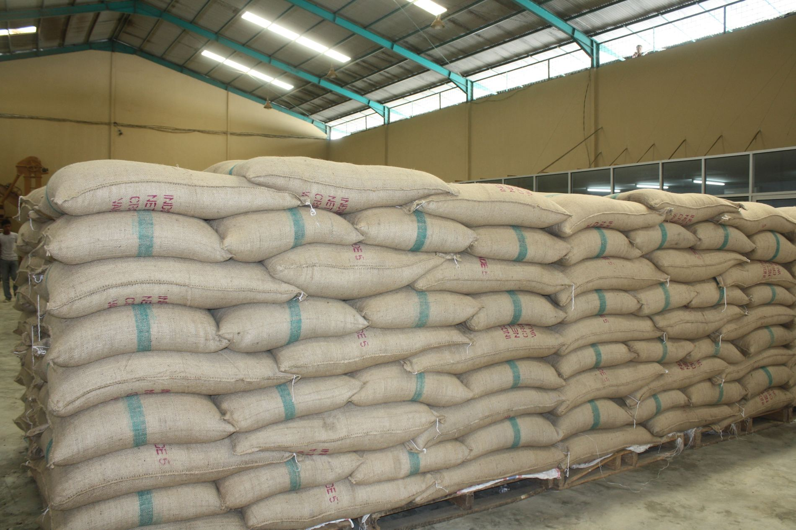
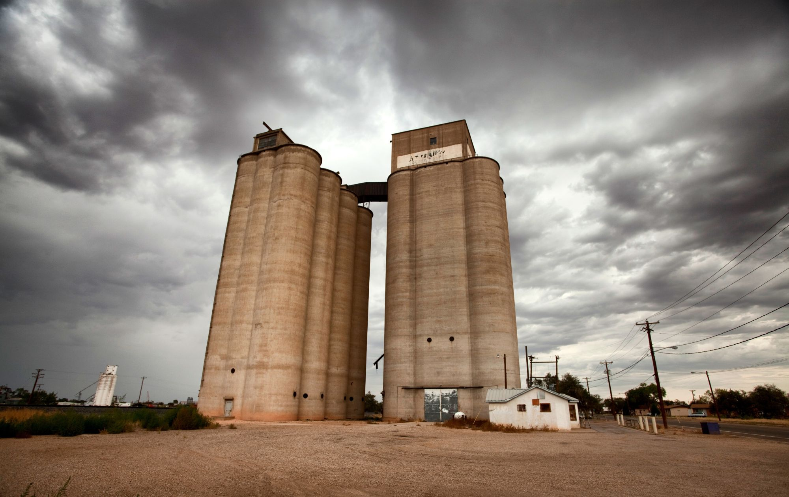
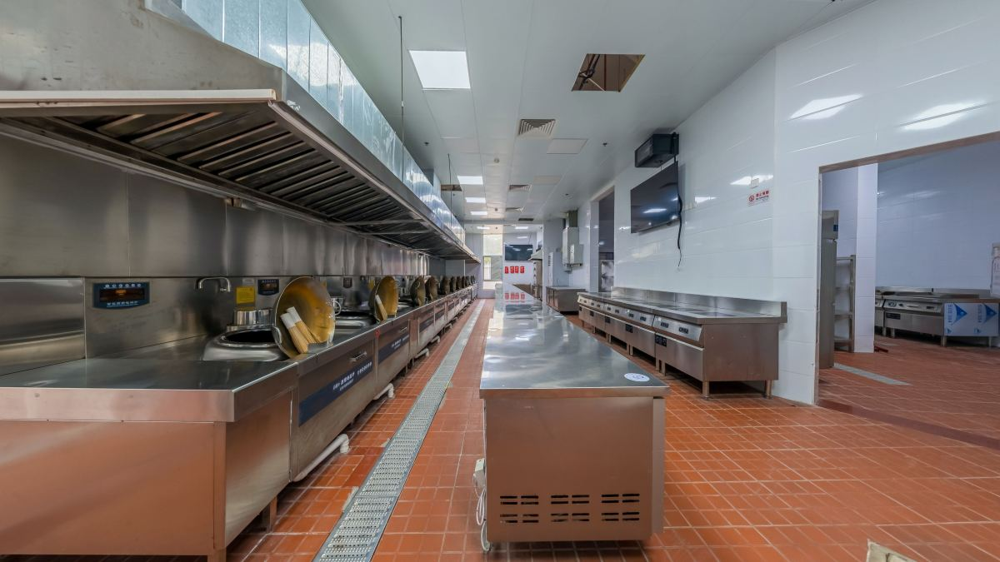
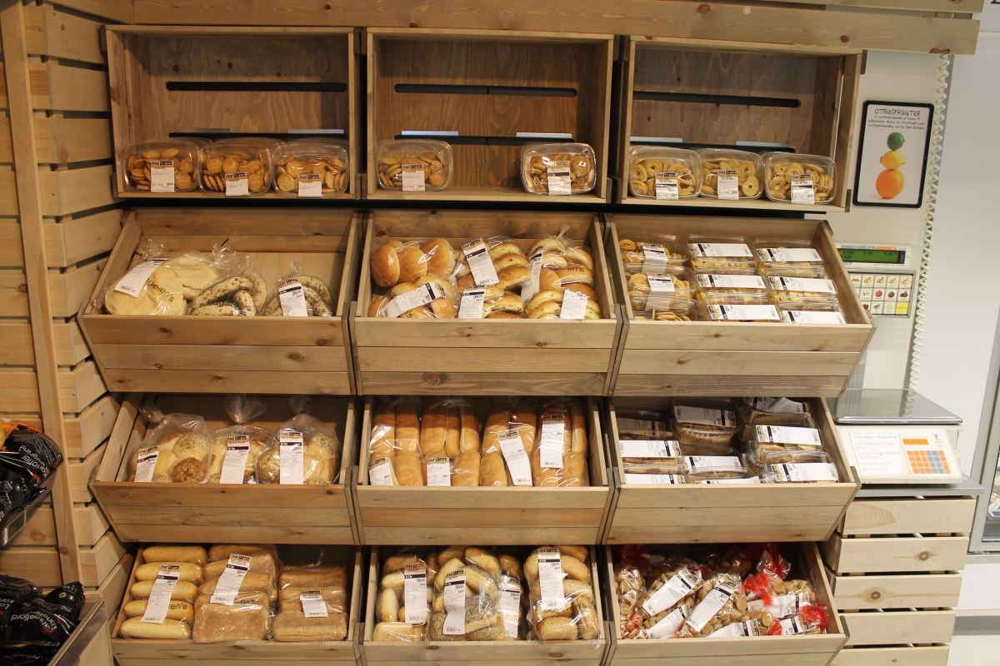
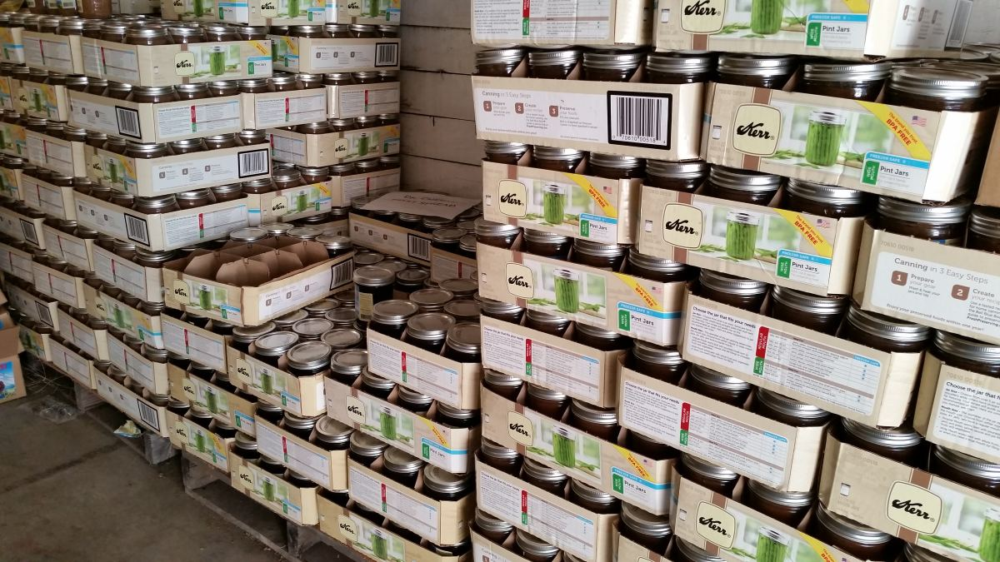
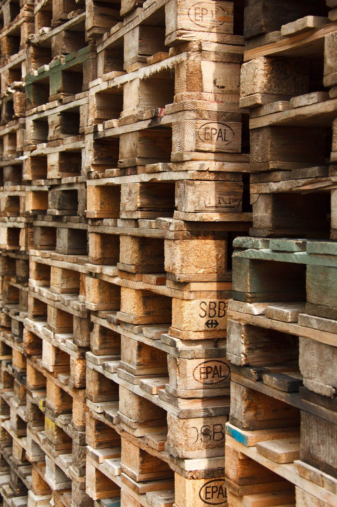
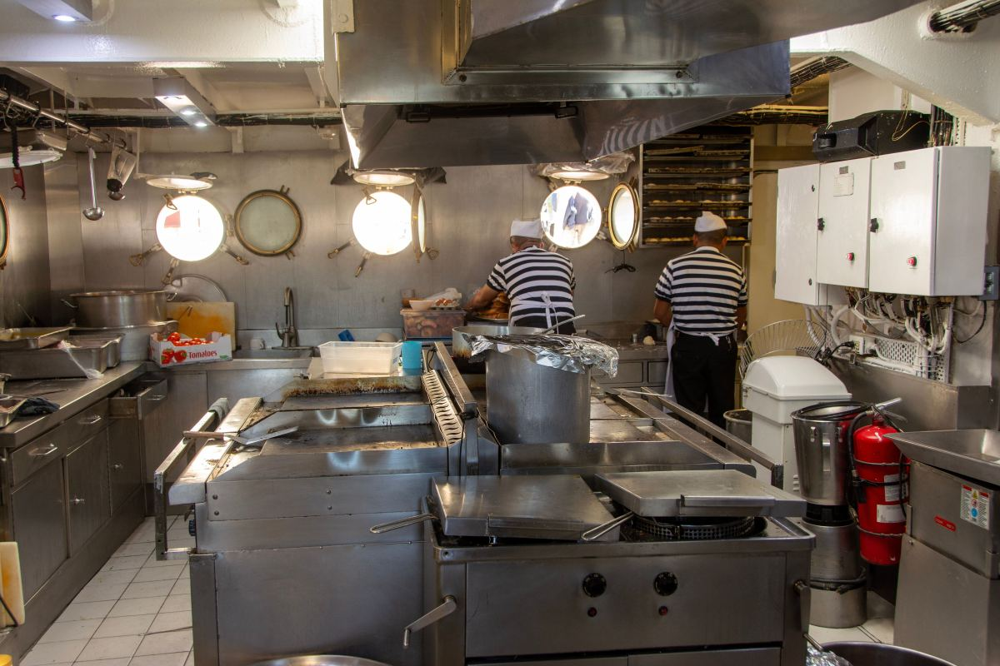

Agua
Una llave que gotea, una filtración, un desagüe tapado. Un roedor aguanta más sin comida que sin agua: donde hay agua permanente, hay a quién le sirve.
Gorbea · Región de La Araucanía
Un restaurante, una bodega o una panadería no contratan control de plagas sólo por el trabajo del día. Contratan por el registro: lo que se hizo, dónde, quién y cuándo. Esa carpeta es lo que se muestra cuando alguien pregunta.
01 — La pieza de esta página
Acá está la diferencia entre un servicio y una visita: un servicio deja papel. Estas siete cosas son las que un local debería poder mostrar de cada visita, y las que conviene preguntar antes de contratar a cualquiera.
Parece obvio y es lo primero que falta. Sin fecha no hay historia, y sin historia no hay cómo demostrar que el local hace las cosas.
No «se fumigó»: qué tratamiento, en qué zonas del local. Cocina, bodega, patio y basurero son cuatro problemas distintos y se tratan distinto.
La empresa y la persona que ejecutó. Es lo que convierte un papel en un documento.
El documento que más pesa y el que menos se entrega. Dónde quedó cada estación o cada punto de control, numerado, dibujado sobre la planta del local. Sirve para revisar, para reponer y para responder.
Actividad, indicios, sectores limpios. Un informe que siempre dice lo mismo no está mirando.
Lo que le toca hacer al cliente y no al aplicador. Es la parte que la mayoría se salta y la que decide si el problema vuelve.
Un control de plagas es un programa, no un evento. Si no queda escrito cuándo se vuelve, no es un programa.
Esta lista es conocimiento general del rubro, escrito por mí: dice qué conviene pedir, no lo que esta empresa entrega. Qué documentos emite Control de Plagas y Servicios, con qué formato y con qué respaldos, lo completa el negocio antes de publicar.

Se contrata para que no haya plagas.
Y para tener qué mostrar cuando pregunten.
02 — Lo que no depende del aplicador
Un tratamiento resuelve lo que hay hoy. Lo que decide si vuelve o no es el local, y son casi siempre las mismas seis cosas. Escribirlas no es echarle la culpa al cliente: es lo que evita pagar la misma visita todos los meses.
Una llave que gotea, una filtración, un desagüe tapado. Un roedor aguanta más sin comida que sin agua: donde hay agua permanente, hay a quién le sirve.
Sacos abiertos, harina en bolsa, basura sin tapa, migas atrás del equipo. No hace falta mucho: lo que se barre en un día alimenta una colonia.
Bajo la puerta, alrededor de una cañería, en la unión de dos planchas. Por donde pasa un lápiz pasa un ratón, y sellarlos rinde más que cualquier tratamiento repetido.
El corredor invisible. Todo lo que se apoya en el muro es una autopista que además no se puede inspeccionar. Separar treinta centímetros cambia el resultado entero.
El basurero es el primer sector que hay que resolver, y casi siempre es el último que se mira. Un contenedor sin tapa a diez metros de la cocina anula el trabajo de adentro.
Un sitio abandonado al lado, un canal, una bodega vecina sin control. El trabajo se hace igual, pero hay que saberlo de entrada para no prometer lo que el vecino no deja cumplir.
Ninguna de estas seis es un servicio que se venda: son condiciones del local. Un proveedor que no las nombra está vendiendo visitas, no resultados.

Quién llama a un control de plagas
Cocinas, bodegas, panaderías, lecherías, galpones de acopio. Y casas, que es otra conversación.
03 — Dos clientes distintos
Un local con fiscalización necesita un programa: visitas con frecuencia definida, puntos numerados, informe por visita y una carpeta que crece. Lo que se compra ahí es continuidad y respaldo.
Una casa con un problema concreto necesita una visita, y decirlo así es más honesto que venderle un contrato. Son dos servicios distintos y conviene que la página los separe, porque el que llama ya sabe cuál de los dos es.
Lista de ejemplo de los tipos de cliente habituales del rubro. A cuáles atiende esta empresa, en qué zona y con qué modalidad, lo completa el negocio: está armada y vacía a propósito.
04 — Dónde se trabaja





05 — Contacto
Diga el rubro, los metros aproximados y si hay bodega o patio. Y, sobre todo, si necesita informe por visita: eso cambia la conversación completa.
Diga qué vio y dónde. Con eso se sabe si es una visita puntual o si primero hay algo que arreglar en la casa — a veces conviene lo segundo.
Las cinco líneas en cursiva son las que hay que llenar antes de publicar. Las dos últimas son las que deciden una contratación, y por eso están escritas como pregunta y no como afirmación: acá no se declara nada que la empresa no haya confirmado.
Para el dueño de Control de Plagas y Servicios
El dueño de un restaurante llama porque vio algo, sí. Pero renueva porque tiene una carpeta que mostrar. Ese es el producto real de este rubro y casi ningún proveedor de la zona lo dice en internet.
Por eso la página entera está armada alrededor del informe, y no alrededor del bicho. Además evita el problema de fondo del rubro: una página de control de plagas no puede mostrar plagas. Muestra los lugares donde no se puede fallar.